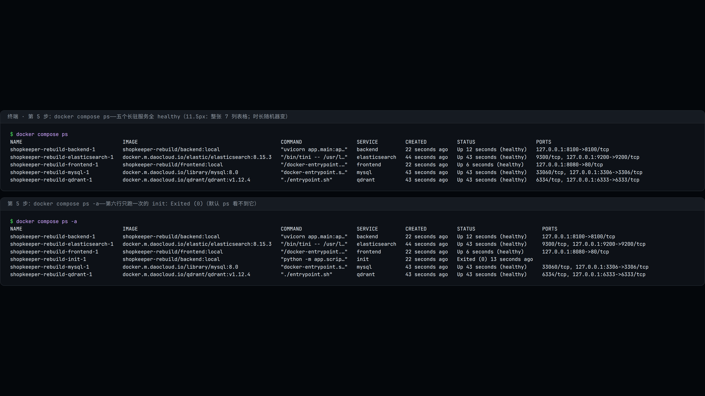
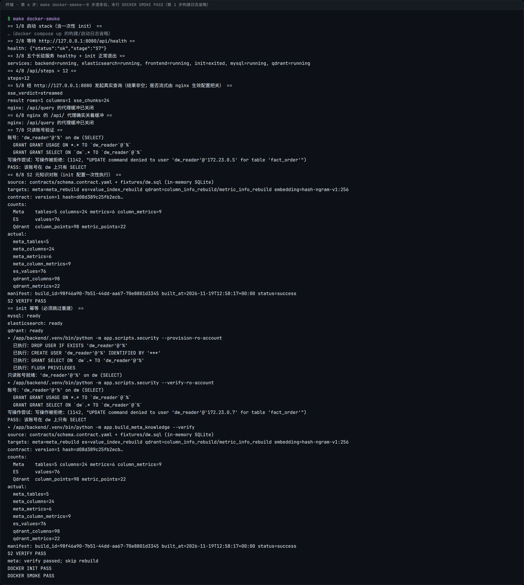

练本 · 阅读版（md 正典派生，改内容请改 manual/page-13.md）
第 13 页 · 换真部署：一条命令起整座城，一条命令验收
前置：第 0 页备好环境（Docker 可用）；本页接第 1 页的
lab-mysql、第 3/9 页的 uvicorn、第 9 页的lab-nginx——动手前先把这三个手动起的东西停掉。L2 到此收尾。
这一页构建什么
把前九页手动起的三个东西换成 compose.yaml 编排的六个服务：mysql / elasticsearch / qdrant / init / backend / frontend。
新设施：elasticsearch / qdrant 是前九页没起过的新设施，随编排一起带起来。
两条命令：一条 make docker-up 起整座城，一条 make docker-smoke 用 8 步自动验收。部署不是“起得来”，是“起得来 + 能被自动验收”。
猜一猜
动手前写下答案：
- 六个服务里哪个只跑一次就退出？
docker compose ps里看得到它吗？ make docker-smoke会检查哪些事？只检查“进程都在跑”够不够？
动手
以下命令都在仓库根目录执行（有 compose.yaml、fixtures/ 的那一层），可整段复制。
第 1 步：拍快照。 本页要改 compose.yaml，先拍一张（.env 不在快照里；同名快照会被拒，重做本页就换个名字）：
scripts/lab save p13-before
第 2 步：停掉手动起的三个东西。 终端 1 里第 3/9 页的 uvicorn 按 Ctrl+C；两个容器删掉：docker rm -f lab-mysql lab-nginx（回显被删的容器名；报 No such container 说明早删了）。
为什么要停：它们占的 3307 / 8000 / 8081 和 compose 不冲突，但手动进程不会自己退，留着就是新旧两套系统同时在跑、容易对着旧入口验收（make docker-down 也管不到它们）。
两份库互不相干：lab-mysql 没有数据卷，删容器 = 第 1–12 页的库没了；部署库的数据来自 fixtures/dw.sql 首次灌进 mysql_data 卷，所以删它不影响这边（想重做前 12 页就回第 1、2 页重建并导入）。
第 3 步：生成 .env。 密码和宿主机端口都从这里读；.env 被忽略、不进快照：
make docker-env
只在没有 .env 时生成（已有就什么都不做），末行 已生成 …（… 是你仓库的位置）。
默认宿主机端口：
| 服务 | 端口 | 说明 |
|---|---|---|
| MySQL | 3306 |
第 1 页绕开 3306 就是因为它常被本机 MySQL 占着 |
| ES | 9200 |
|
| Qdrant | 6333 |
|
| backend | 8100 |
|
| frontend | 8080 |
和第 9 页手动的 8081 不是一个（编排重新分了门牌号） |
被占就改 .env：改对应那行（MYSQL_HOST_PORT / ES_HOST_PORT / QDRANT_HOST_PORT / BACKEND_HOST_PORT / FRONTEND_HOST_PORT），别改 compose.yaml，改完重跑 make docker-up；smoke 会自己问 compose 前端实际端口。
FRONTEND_BIND：默认 0.0.0.0——前端是唯一对外入口，这会让局域网里的机器也能访问；只在本机调试就改成 127.0.0.1（其余四个端口本来就只绑本机）。
起之前先自查：ss -tlnp | grep -E ':(3306|9200|6333|8100|8080) '——有输出就是被占，改 .env 里对应的 *_HOST_PORT。
第 4 步：起整座城。
make docker-up
它等于 docker compose up -d --build：先构建 backend / frontend 镜像，再按依赖顺序起六个服务。
第一次构建约 8 分钟（实测；网络慢会更久）：屏幕一直在打 #1 … 和 Container ... Started，别以为卡死；它要等 init 成功、backend / frontend 起来才把提示符还给你，中断了重跑一次就行。
报错退出：先看 docker compose logs <service>（<service> 换成报错那个服务名，比如 frontend），最常见的是宿主机端口被占（回第 3 步改 .env）或镜像拉取失败（换镜像源后重跑）。
第 5 步：看状态。 先 docker compose ps，再 docker compose ps -a。
第 6 步：一键验收。
make docker-smoke
它自己会再 up 一次（幂等），然后 8 步逐条验，最后一行 DOCKER SMOKE PASS。
停与删：停整座城用 make docker-down（容器和网络删掉、数据卷保留）；make docker-reset 连数据卷一起删（破坏性，会让你输入 yes 再动手）。
先别 docker-reset、也别手动删卷——“拆一刀”只 make docker-down，数据卷要留着。
手动件别再起：第 2 步停掉的三个手动件之后不要再手动起——它们的位置由 compose 里的 mysql / backend / frontend 接管，起停统一交给 compose。
你应该看到
第 4 步末尾你会看到 init 先 Started 再 Exited，backend Healthy，frontend 最后 Started；第 5 步 docker compose ps 只有 5 行（节选 NAME / STATUS 两列，终端里还有 IMAGE / COMMAND / SERVICE / PORTS）：
shopkeeper-rebuild-backend-1 Up 2 minutes (healthy)
shopkeeper-rebuild-elasticsearch-1 Up 4 minutes (healthy)
shopkeeper-rebuild-frontend-1 Up About a minute (healthy)
shopkeeper-rebuild-mysql-1 Up 4 minutes (healthy)
shopkeeper-rebuild-qdrant-1 Up 4 minutes (healthy)
docker compose ps -a 多出第六行——只跑一次的那个：shopkeeper-rebuild-init-1 Exited (0) 2 minutes ago。frontend 的健康检查比 backend 晚几秒，刚起好时可能短暂显示 health: starting，等一下再刷就对了。
第 6 步 make docker-smoke（节选；第 1 步的构建日志、第 8 步的检查明细从略）：
== 1/8 启动 stack（含一次性 init） ==
== 2/8 等待 http://127.0.0.1:8080/api/health ==
health: {"status":"ok","stage":"S7"}
== 3/8 五个长驻服务 healthy + init 正常退出 ==
services: backend=running, elasticsearch=running, frontend=running, init=exited, mysql=running, qdrant=running
== 4/8 /api/steps = 12 ==
steps=12
== 5/8 经 http://127.0.0.1:8080 发起真实查询（结果非空；是否流式由 nginx 生效配置把关） ==
sse_verdict=streamed
result rows=1 columns=1 sse_chunks=24
nginx: /api/query 的代理缓冲已关闭
== 6/8 nginx 的 /api/ 代理确实关着缓冲 ==
nginx: /api/query 的代理缓冲已关闭
== 7/8 只读账号验证 ==
PASS: 该账号在 dw 上只有 SELECT
== 8/8 S2 元知识对账（init 配置一次性执行） ==
S2 VERIFY PASS
== init 幂等（必须跳过重建） ==
DOCKER INIT PASS
DOCKER SMOKE PASS
第 5 步那行 sse_verdict 可能是 streamed，也可能是 too-fast：后者表示整个响应 200 毫秒内就结束、时间上分辨不出是否流式，脚本于是拿 nginx -T 的生效配置定性——只要跟着打出 nginx: /api/query 的代理缓冲已关闭，这一档照样算通过，不是失败。


对账
-
猜 1：只跑一次的是 init。
docker compose ps默认只列 running，所以第一张表里没有它；ps -a才看到Exited (0)。它退出码 0，backend 才被允许启动。 -
init 为什么必须一次性：它干三件事再退出——等 mysql / ES / qdrant 健康、开通并验证只读账号、校验元知识（不对就重建）。常驻只会白占资源，还让“初始化到底成功没有”没有信号；
restart: "no"+ 非零退出即失败。 -
depends_on的健康检查：init 用service_healthy等三座存储；backend 用service_completed_successfully等 init 退出码 0；frontend 用service_healthy等 backend。少了这些条件，compose 只按启动顺序拉，init 可能比库快、backend 可能没初始化就接客——起得来，但没初始化。 -
8 步各防什么：
| 步 | 防什么 |
|---|---|
1/8 |
起整栈 |
2/8 |
打通 nginx→backend 入口链 |
3/8 |
五个常驻 healthy 且 init 退出 0——防“只看 running，不看 health 和 init” |
4/8 |
/api/steps 正好 12——防契约没进镜像 |
5/8 |
真查询出结果——防接口通但查不出数 |
6/8 |
nginx 的 /api/ 真的 proxy_buffering off——防流被攒成整包 |
7/8 |
只读账号真写不了——防“只读只在文档里” |
8/8 |
元知识对账 + 再跑一次 init 必须跳过重建——防初始化结果不对、一次性脚本不可重跑 |
5/8 的判据：rows=1 且 sse_verdict 为 streamed，或为 too-fast 且 nginx 生效配置确认缓冲已关——too-fast 只因响应太快、时间上分不出流式，是合法的通过档，别当失败；sse_chunks 是客户端收到的 SSE 分片数（不是 12 条 progress 事件），有一两个出入不用对。
- 起得来 ≠ 部署好：
docker compose up成功只说明容器建起来了——健康可能还在 starting、init 可能已失败退出（默认ps还看不到）、查询可能 502、流可能被 nginx 攒住。
smoke 的意义：每一步都是一条判据，红一步就 DOCKER SMOKE FAIL，并把 ps -a 和相关日志全打出来。
你现在拥有：一套“一条命令重建、一条命令验收”的部署——
compose.yaml写清怎么起和依赖顺序，scripts/docker-smoke.sh写清“起对了没有”；换台机器 clone 下来，两条命令复跑同一套判据。
拆一刀
L2 的级考核：拆编排。
-
先一键停：
make docker-down（容器和网络删掉，数据卷保留）。 -
打开
compose.yaml，把init:整段删掉：从init:那行删到 init 的最后一行——qdrant:下面那条condition: service_healthy，再下一个空行就是backend:。
别按字符串瞎删：全文件 condition: service_healthy 有 4 处（init 里等三座存储的 3 处 + frontend 等 backend 的 1 处）。
还要删三行：backend 的 depends_on: 块里指向 init 的三行（depends_on: / init: / condition: service_completed_successfully）。
只删 init 不删这三行：docker compose 会直接报 service "backend" depends on undefined service "init": invalid compose project。
删完自查：Ctrl+S 保存，docker compose config -q 应通过、只剩 5 个服务，make docker-up 能起——只是少了一个 init。
- 跑
make docker-smoke。它会在第 3/8 步红（它会先轮询约 120 秒等服务状态齐，别以为卡死）：
== 3/8 五个长驻服务 healthy + init 正常退出 ==
init 没有成功退出（state=缺失, exit=?）
DOCKER SMOKE FAIL: 120 秒内服务状态没齐
后面跟着 5 行 ps -a、三座存储的日志，以及一条 no such service: init——fail() 想打 init 的日志，可 init 已被你从编排里删掉，报这句是预期内的，不是新故障（backend / frontend 的日志也因此不会打印）。
假象：五座设施全 healthy、/api/health 也回 200——只看这些，部署像好的；但没有 init，下一次从零初始化就没人做了。起得来，不等于部署好。
- 还原：
scripts/lab reset p13-before --yes，末行现在工作区与快照 "p13-before" 完全一致。；再make docker-up（init 回来会重跑一次，backend / frontend 重建，等它健康），最后make docker-smoke回到DOCKER SMOKE PASS。
等不到别慌：smoke 第 2 步会重新等 /api/health（最多 360 秒），先看它打出来的日志。整座城先留着跑——L3 的“审”要在它上面做。